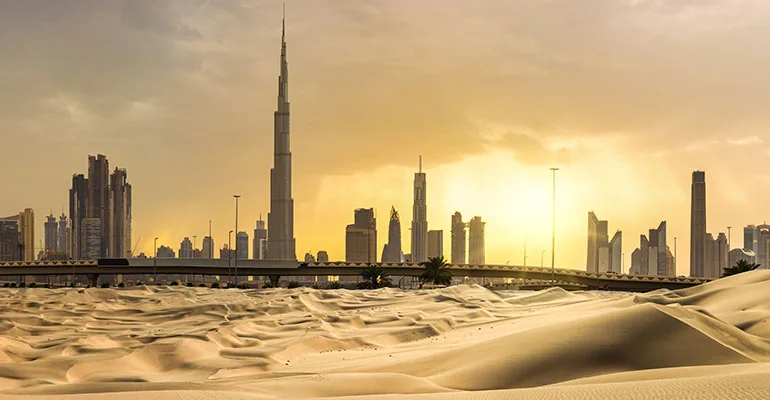
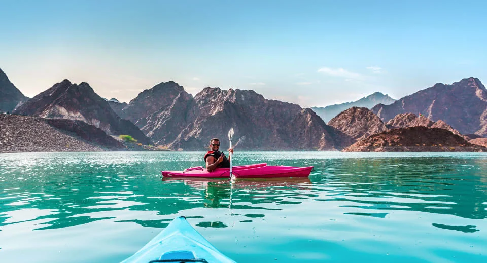

23 декабря · средаПрилёт
Первый вечер
День прилёта оставляем гибким. Если успеете, встречаем Дубай у воды и смотрим световое шоу.

23 ДЕКАБРЯ — 3 ЯНВАРЯ
Дни у моря, вечер в пустыне и Новый год у Бурдж-Халифы.
Открыть маршрутДля пляжа и прогулок обычно тепло. Для вечера у воды и поездки в пустыню пригодится лёгкая кофта.
Это климатические ориентиры. Точный прогноз проверяйте ближе к вылету. В январе возможны короткие дожди.
Дубай на Новый год · пример маршрута на 11 ночей
Дни прилёта и вылета можно адаптировать под свои билеты.
День прилёта оставляем гибким. Если успеете, встречаем Дубай у воды и смотрим световое шоу.
Дворики с ветряными башнями, переправа через Creek и рынки по обе стороны воды.
Пляж с видом на Burj Al Arab, каналы Madinat и ярмарка на Fort Island.
Яхты и небоскрёбы, пляж JBR, пешеходный мост и вечернее световое шоу.
Первое знакомство с Бурдж-Халифой до новогодней ночи. От смотровой до вечернего шоу пешком.
Мечеть Jumeirah, контраст старого и нового города и архитектура Музея будущего.
Песок, открытый горизонт и выбор между сафари и спокойной поездкой к озёрам.
Утро среди цветов, вечер среди павильонов и огней Global Village.
Главный вечер поездки. Бесплатный Downtown, резервная набережная и проверенные варианты со столиком.
Современное искусство или фламинго, короткая лодка и вечерняя панорама с другой стороны залива.
Пальма сверху, набережная у Atlantis и вечер у моря перед обратной дорогой.
День вылета. Выберите утренний, дневной или вечерний сценарий по времени рейса.

Абу-Даби, Шарджа, Хатта, горы Рас-эль-Хаймы и побережье Фуджейры. Выбирайте идеи отдельно от основного расписания.
Идеи поездок